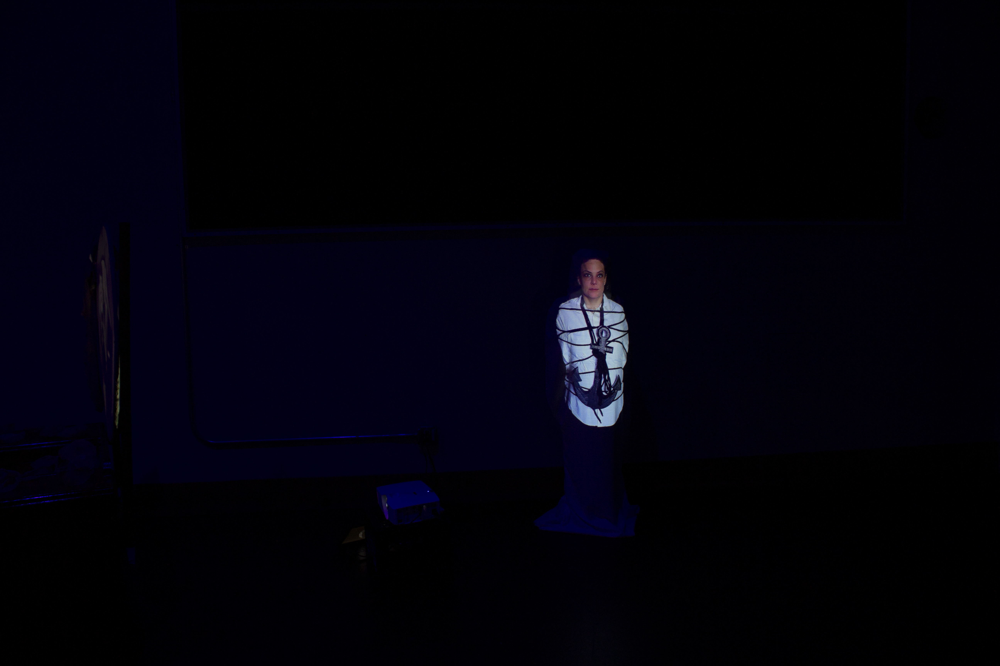

Unrest
Come face to face with Olivia, this projection mapping piece will have you spend some time experiencing a moment of truth with a hidden illness. Olivia shows you her calm exterior that is often the mask for this mental disorder. As the light flows down through her body you will get an inside view of what anxiety and panic disorder can feel like to many suffering. People with anxiety and panic disorder deal with a multitude of symptoms that are hidden to the outside world through a calm demeanor. These symptoms can make simple everyday tasks near impossible at times. Mental disorders can often be dismissed or stigmatized due to lack of knowledge. My hope is to bring awareness to anxiety and mental disorders in general.
